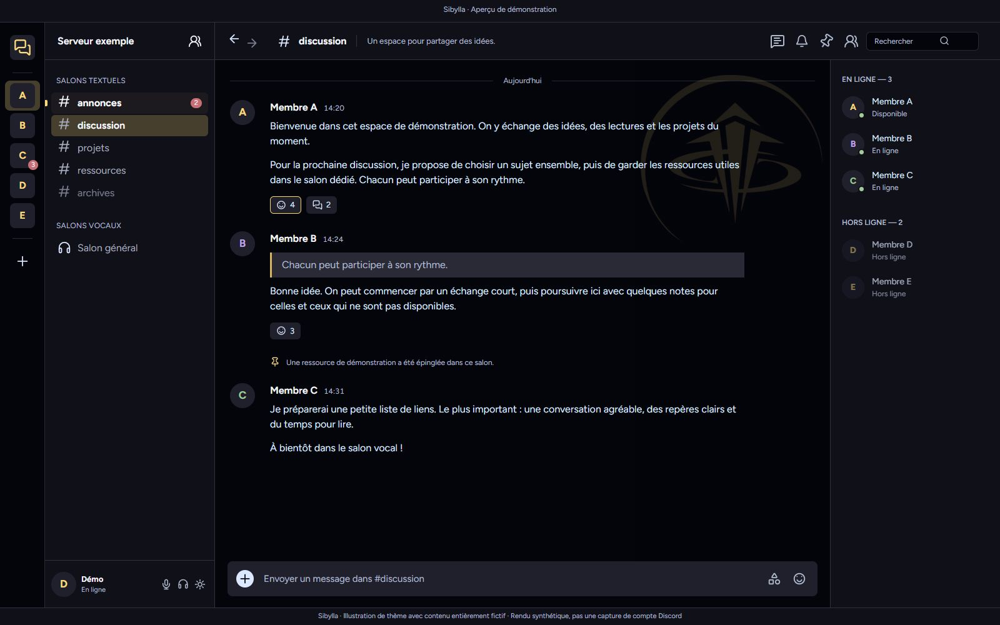
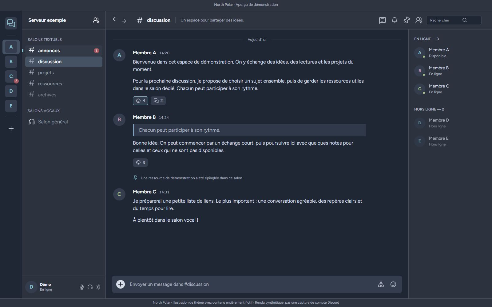
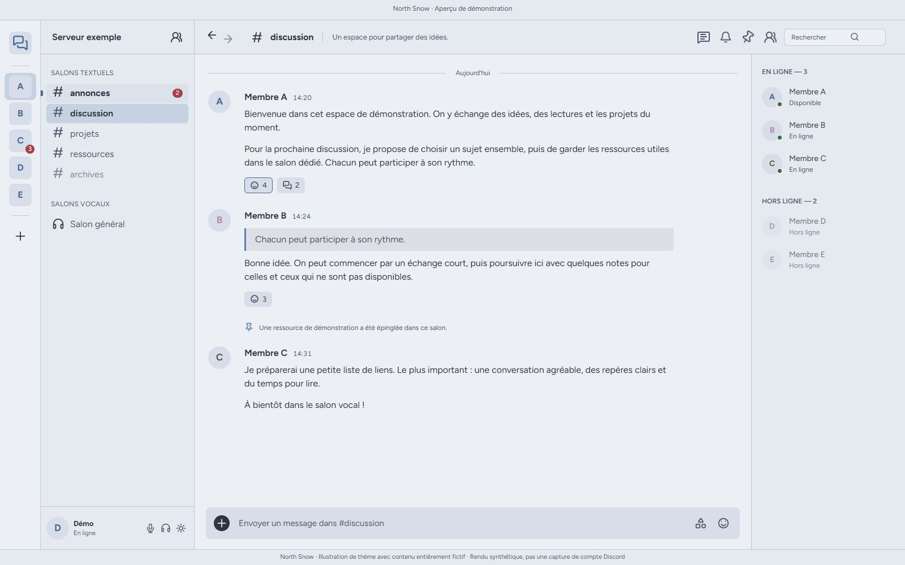
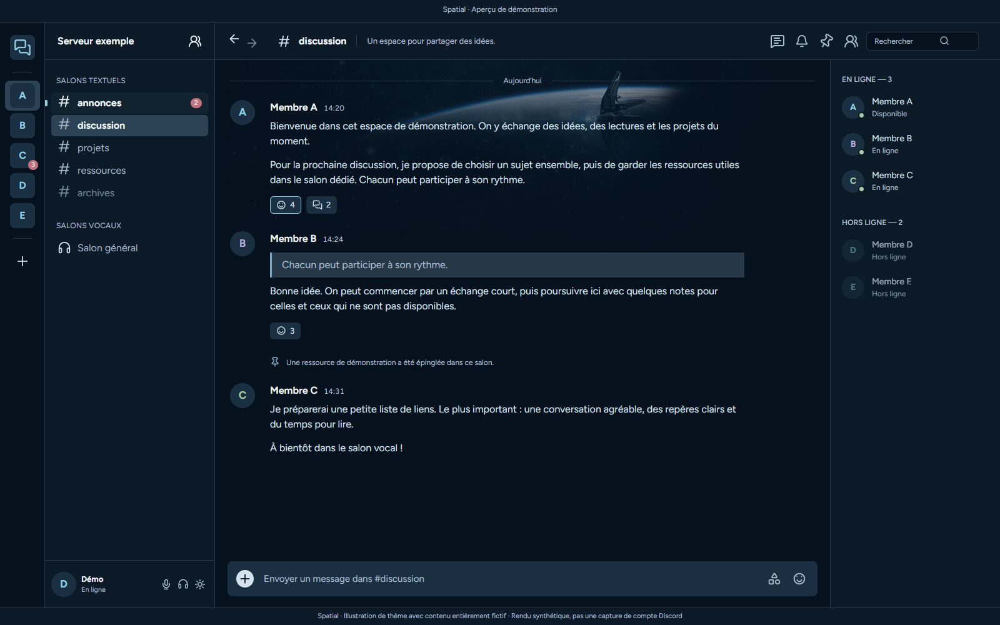
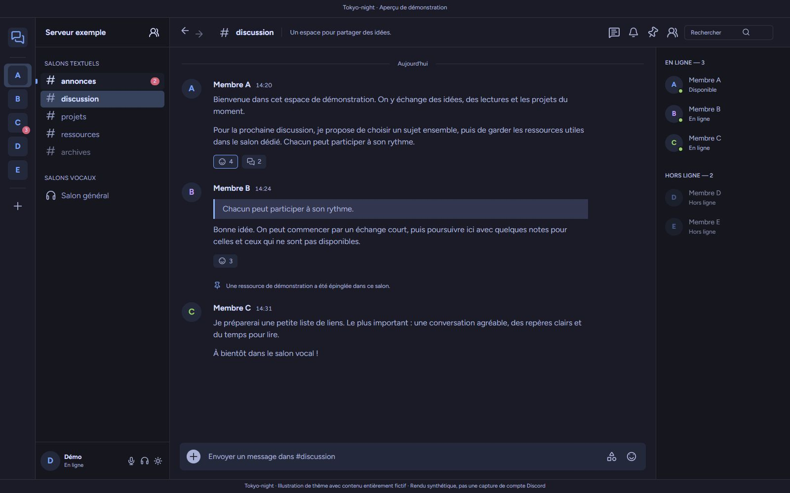

Sibylla
Le thème principal

Minuit, avec une touche d’or.
Une base sombre et des repères dorés. Le logo Sibylla reste discret, en haut à droite de la conversation.
Minuit · Or · Givre
Télécharger Sibyllasibylla.theme.css · v3.0.1Pour lire, discuter et rester en vocal. Une interface commune, cinq palettes à choisir selon vos envies.
Trouver votre thèmeLe thème principal

Une base sombre et des repères dorés. Le logo Sibylla reste discret, en haut à droite de la conversation.
Minuit · Or · Givre
Télécharger Sibyllasibylla.theme.css · v3.0.1Flavor sombre

Les gris bleutés de Nord et ses accents Frost. Une palette douce pour les longues discussions.
Polar Night · Frost
Télécharger North Polarnorth-polar.theme.css · v3.0.1Flavor claire

Des surfaces Snow Storm, des textes Polar Night et des repères bleus. La version claire de North.
Snow Storm · Polar Night
Télécharger North Snownorth-snow.theme.css · v3.0.1Flavor orbitale

Un fond bleu profond et un vaisseau à l’horizon. L’image accompagne le chat sans remplacer vos contenus.
Nuit orbitale · Bleu glacier
Télécharger Spatialspatial.theme.css · v3.0.1Flavor nocturne

Une base nuit, des bleus lumineux et des nuances violettes, inspirés du thème Tokyo Night.
Nuit · Bleu · Violet
Télécharger Tokyo-nighttokyo-night.theme.css · v3.0.1Les aperçus sont des illustrations du thème avec des données entièrement fictives. Aucune capture de compte personnel n’est utilisée.
Une première installation ? Le guide vous accompagne, clic par clic, avec Vencord ou BetterDiscord.
Ouvrir le guide completTéléchargez un fichier .theme.css ci-dessus. Rien à décompresser.
Dans les paramètres de Vencord ou BetterDiscord : Themes → Open Themes Folder. Copiez votre fichier dedans.
Revenez dans Discord et activez son interrupteur. Gardez une seule version active à la fois.
Ces thèmes s’utilisent avec Discord sur ordinateur et un outil de personnalisation. Le rendu a été contrôlé avec Vencord ; un essai natif complet dans BetterDiscord n’est pas revendiqué. Le guide d’installation précise les étapes et le dépannage.